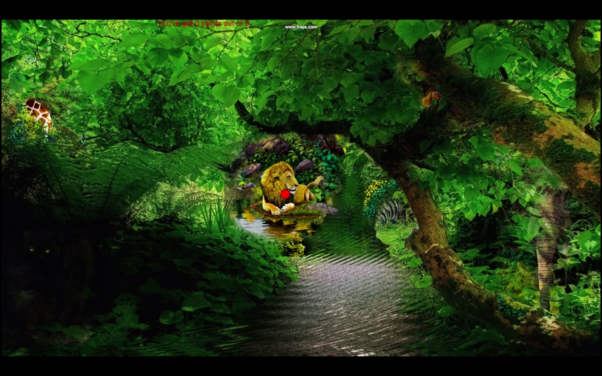

Jungle speak is a working prototype of a language learning tool. You search for animals in the jungle with your gaze. When you find for example a lion it will become more visible and when you say something like "I found the lion" a voice tells you that you are correct and the lion becomes visible. It is built with a Tobi eye tracker and a speech-to-text library for processing using Google's recourses.
Our motivation for doing this project was exploring the combination of speech-to-text and eye-tracking technology in an interactive system. We choose to make a language learning tool because we wanted to take advantage of the fact that looking at a object and saying it's name at the same time can help learning the name. We did usability testing on JungleSpeak letting classmates try it and we conducted an open-ended interview afterwords.
One interesting thing we learned from this was how people often first look and then talk when interacting with the system, they don't make the actions simultaneously. We also learned how frustrating it can be for users when eye-tracking works ill.
For me this was a worthwhile project. It was the first time I was part of a project where we developed a high-fidelity prototype. I learned how coding and designing can walk hand in hand.